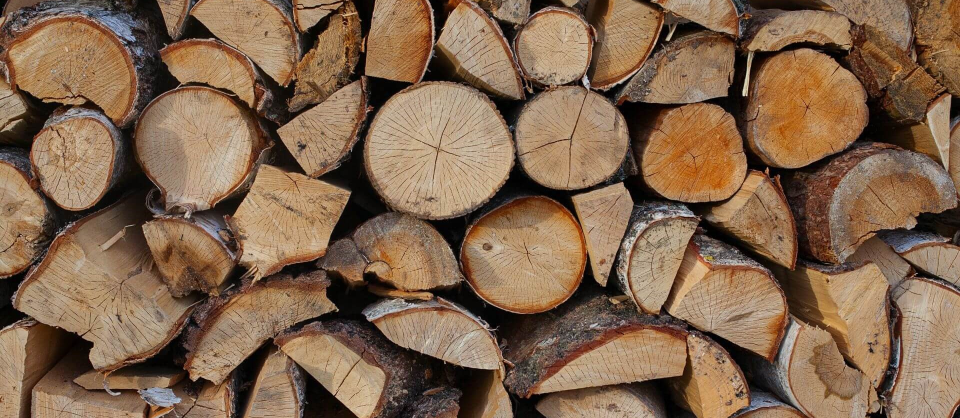
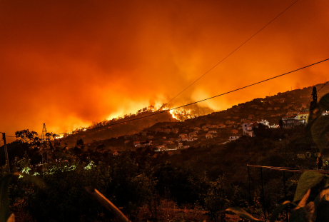
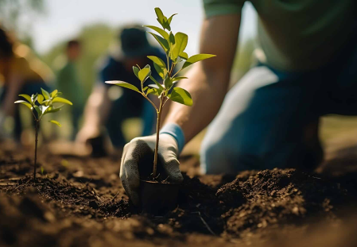

|  |
|---|
La deforestazione è una delle minacce più gravi per l'ambiente.
Si verifica quando l'abbattimento degli alberi supera il loro
tasso di ricrescita, portando a perdita di suolo fertile, desertificazione,
alterazioni degli ecosistemi e aumento della CO2, contribuendo al riscaldamento globale.
Nelle città, l'abbattimento degli alberi è un problema complesso. Molti cittadini non conoscono le
leggi che proteggono il patrimonio arboreo urbano.
L'articolo 734 del Codice Penale punisce la distruzione di bellezze
naturali in aree protette. Nel 2014, durante il vertice Onu Climate Summit, è stato firmato
un accordo per fermare la deforestazione entro il 2030 e ripristinare oltre 350 milioni di
ettari di foreste e campi coltivati.
|  |  |
|---|
Tuttavia, gli incendi devastanti e il cambiamento climatico
ostacolano gli sforzi di riforestazione. È cruciale non solo piantare alberi, ma assicurarsi che sopravvivano.
Devono essere sviluppate linee guida per scegliere le specie di semi più
adatte ai vari ambienti, tenendo conto delle nuove condizioni climatiche.
Per proteggere gli alberi nella tua città, informati sulle normative locali e partecipa
attivamente alle iniziative di tutela del verde urbano.
Solo con un impegno collettivo possiamo contrastare efficacemente la deforestazione e
preservare il nostro ambiente per le future generazioni.
 |
 |
|---|